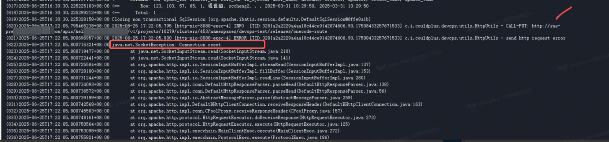
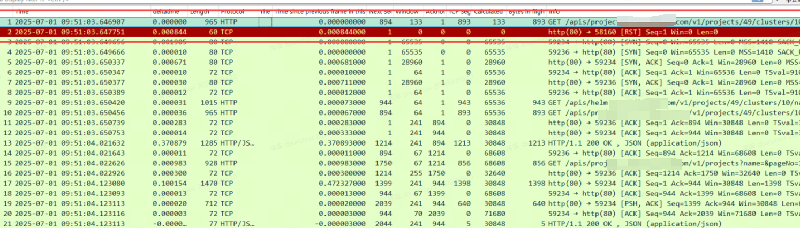
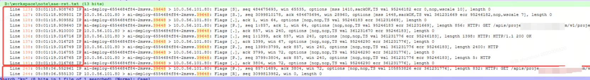
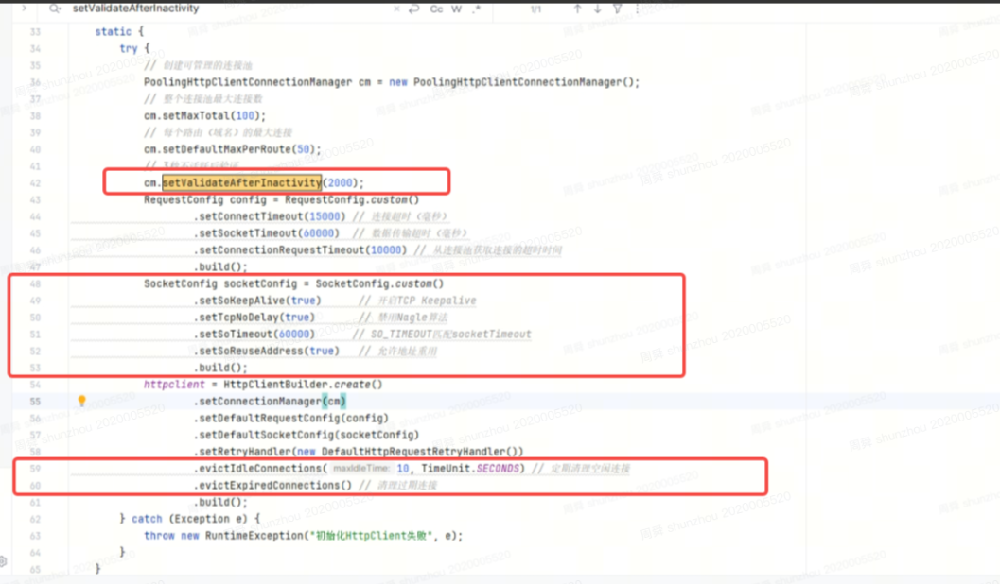
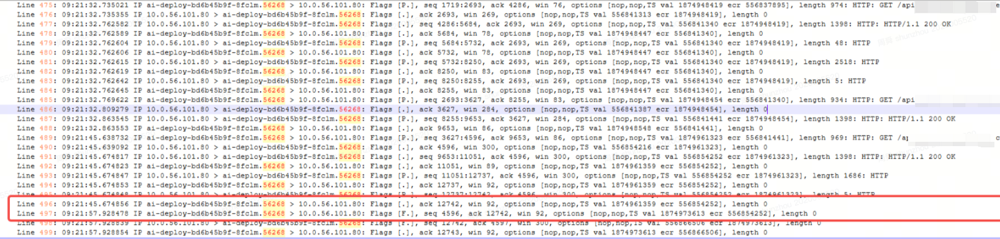
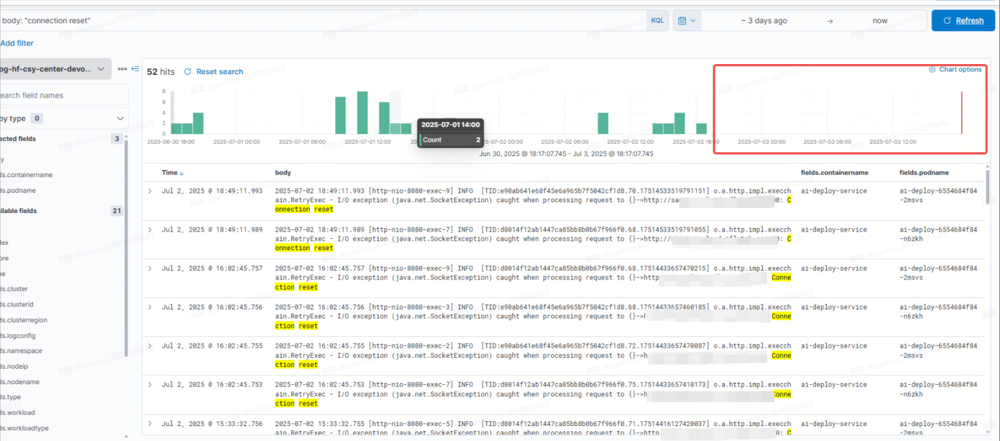

java访问sae-connection reset
现象
2025-07-01 19:24:14.646 [http-nio-8080-exec-8] INFO [TID:d8014f12ab1447ca85bb8b0b67f966f0.77.17513690546275667] o.a.http.impl.execchain.RetryExec - I/O exception (java.net.SocketException) caught when processing request to {}->http://sae-pre.xxxx.xxx.com:80: Connection reset
- SRE稳定性梳理APM指标发现
新上的服务deploy请求sae服务有偶现成功率66%
分析
- SRE介入分析

基本信息
从pod到node，到leaf，再到node，再到pod
请求端: deploy 服务
目标端: sae-pre.xxxx.xxx.com/sae.xxxx.xxx.com通过curl试图重现，重现不了
curl -X PUT 'http://sae-pre.xxxx.xxx.com/apis/helm.xxx.xxx.com/v1/projects/10279/clusters/453/namespaces/devops-test/releases/onecode-route' -H 'accept-encoding: gzip,deflate' -H 'authorization: Bearer xxxx' -H 'sw8: ' -H 'sw8-correlation: ' -H 'sw8-x: 0-' -H 'content-type: application/json' -H 'content-encoding: UTF-8' -H 'user-agent: Apache-HttpClient/4.5.14 (Java/1.8.0_342)' -d '{xxxx}'SAE同学抓到RST的包
没有握手 只有应用侧突然发送的

既然有RST, 肯定能抓到连接的包， 继续抓包,抓到完整的包

通过这个抓包能看到问题了
- 正常握手请求后，也发生了数据交互。http是1.1,请求头也有keep-alive 没有正常的四次挥手和tcp-keepalive
- 2小时58分后 应用侧突然发了一个请求， 此时应用侧觉得tcp链接还是在的，但是实际上tcp连接不在了 ， 服务侧rst是合理的
通过上面的流程，说明应用侧还认为链接是还是存在的， 但是没有发生连接保活, 那么这个连接在接近3小时里大概率会被中间链路给丢弃掉， 后续应用侧还要发送包，对端自然会rst
解决
应用侧
动作
研发同学主动关闭请求, 发起http请求增加了如下参数 。
分析
两个关键参数
cm.setValidateAfterInactivity(2000)
应用发起请求前会从请求池里拿出connection， 如果 connection闲置了2s 那么应用会去先验证下这个连接是否有效， 有效则使用， 无效就创建一个新连接httpclient.evictIdleConnections(10, TimeUnit.SECONDS)
定期处理无效闲置 >= 10s的请求从抓包对比看，之前的请求应用侧确实没有主动发送Fin
配置这两个配置后，数据发送完，10+2s后会主动发送Fin

- 效果
